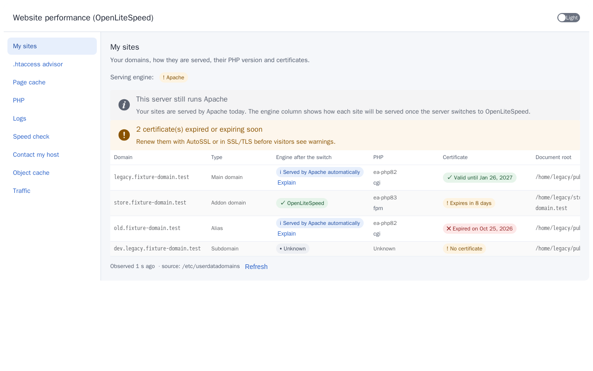
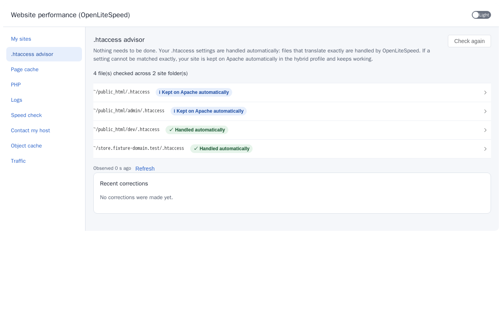
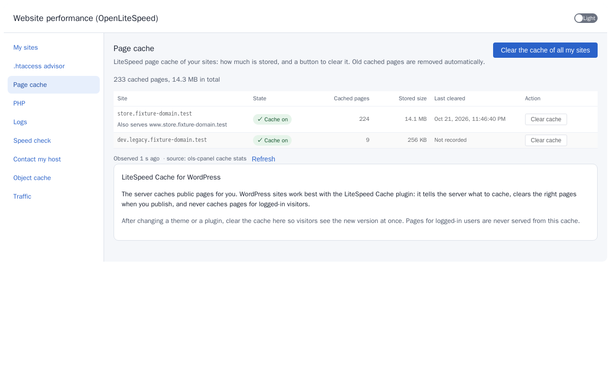
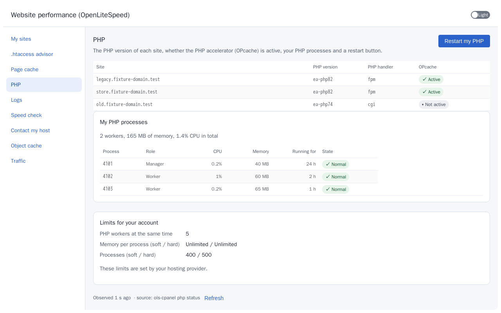
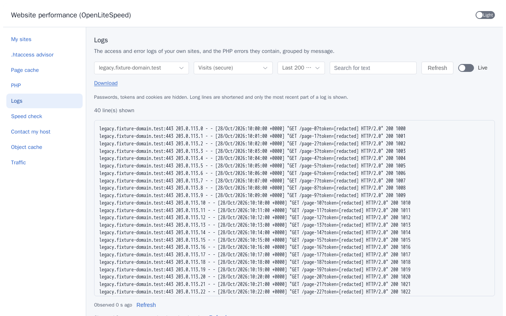
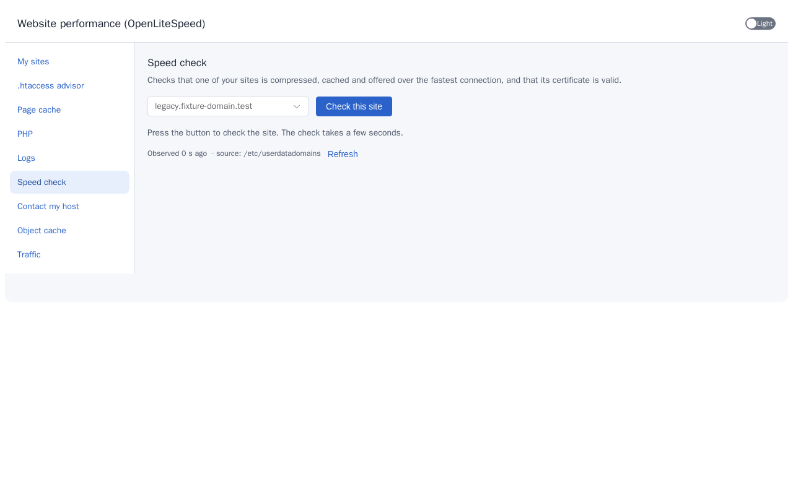
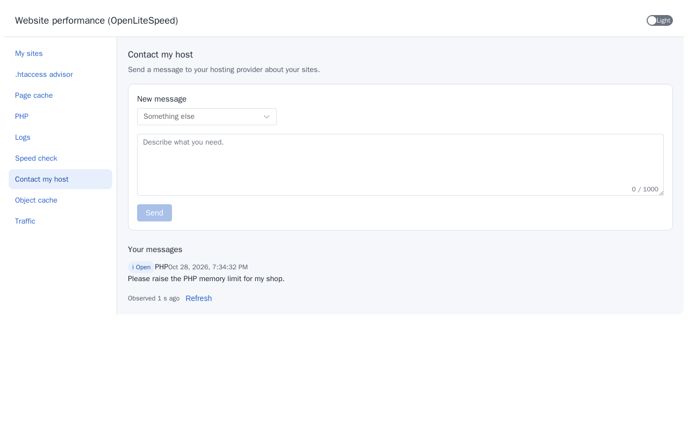
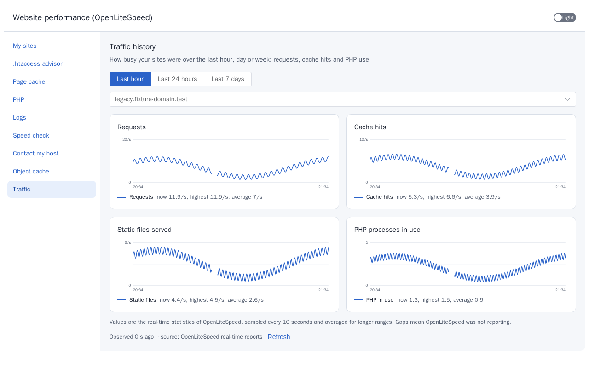
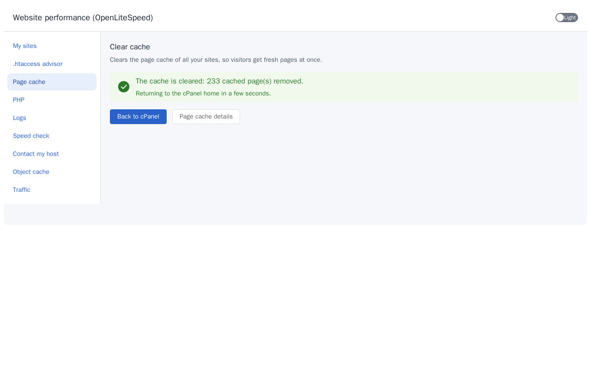
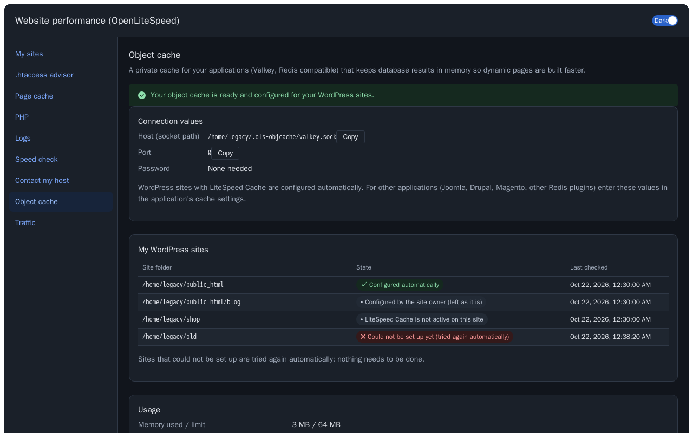

cPanel plugin tour
For site owners. Every hosting account gets Website performance (OpenLiteSpeed) in cPanel. It runs as the account and can only see that account's own sites. Every screenshot is an example; click one to enlarge it.
My sites
Your domains, how they are served, their PHP version and certificates. A warning appears when a certificate has expired or is about to.


.htaccess advisor
Nothing needs to be done. Your .htaccess settings are handled automatically; if one cannot be matched exactly, the site stays on Apache and keeps working. The advisor shows what was checked and why.


Page cache
The LiteSpeed page cache of your sites: how much is stored, and a button to clear it for one site or all of them. Old cached pages are removed automatically.


PHP
The PHP version of each site, whether the PHP accelerator (OPcache) is active, your PHP processes and a restart button.


Logs
The access and error logs of your own sites, and the PHP errors they contain, grouped by message.


Speed check
Checks that one of your sites is compressed, cached and offered over the fastest connection, and that its certificate is valid.


Contact my host
Send a message to your hosting provider about your sites. It arrives in the administrator's Requests view.


Object cache
A private cache for your applications (Valkey, Redis compatible) that keeps database results in memory so dynamic pages are built faster. It shows your connection values with a copy button and the state of each WordPress site. See Object cache.

Traffic
How busy your sites were over the last hour, day or week: requests, cache hits and PHP use.


Clear cache
The one-click Clear cache icon on the cPanel home clears the page cache of all your sites at once and takes you back.


Light and dark

